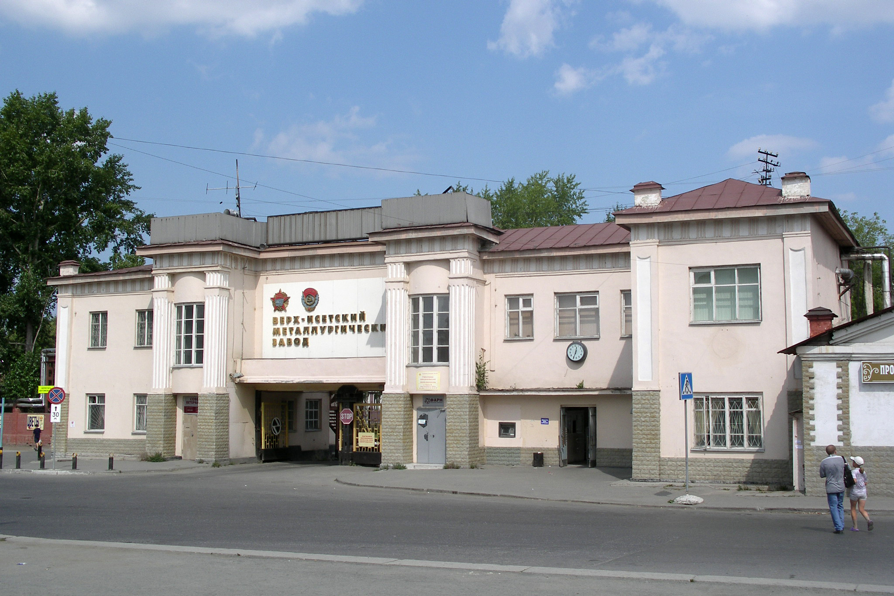

Рождение Верх-Исетского завода состоялось 8 (19) ноября 1726 года. Инициатором строительства был сподвижник Петра I и опытнейший специалист горнозаводского дела Вильгельм де Геннин. Благодаря его личному участию в опытах по плавке руд, уже в первые годы существования завода верх-исетское железо обрело широкую известность отличным качеством.

Проходная Верх-Исетского металлургического завода